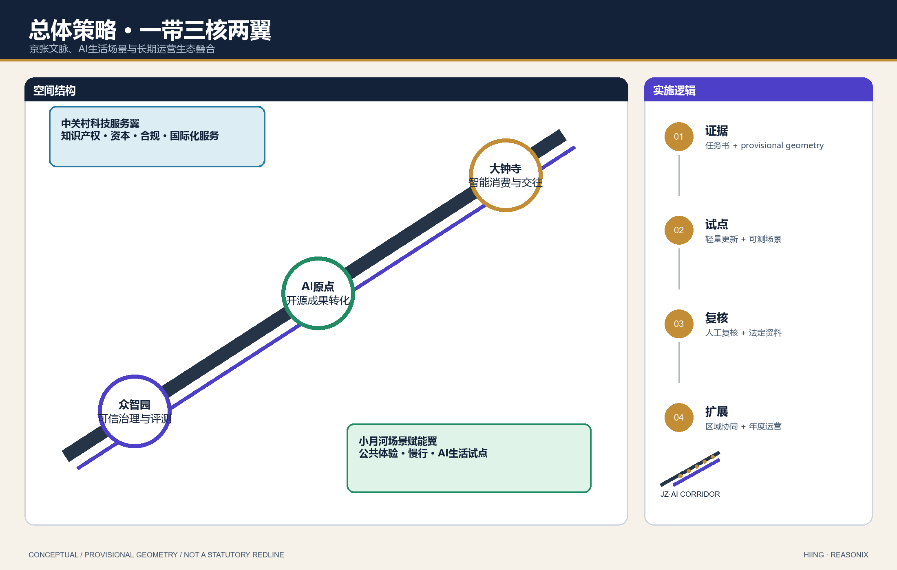
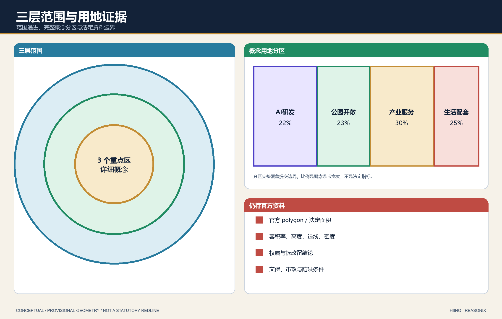
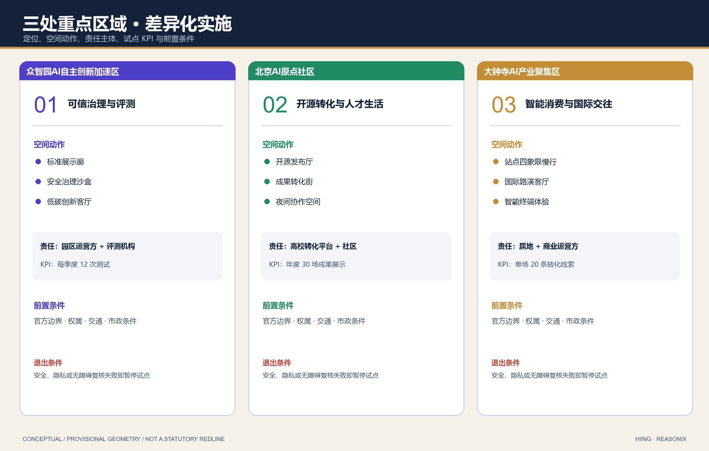
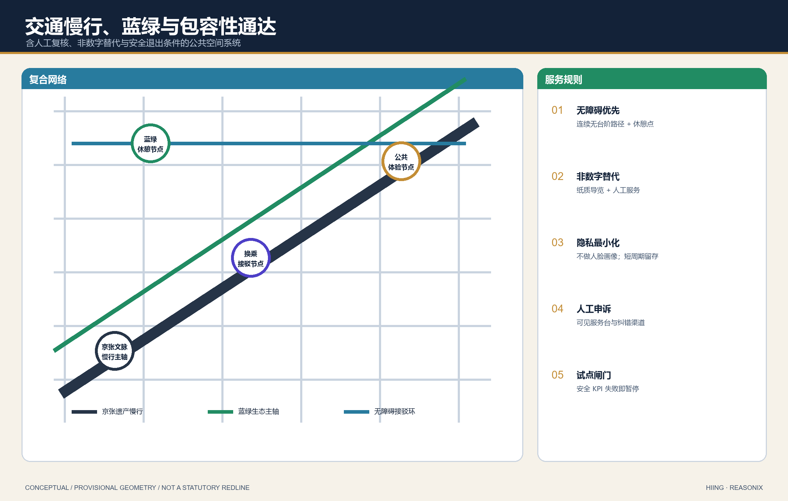
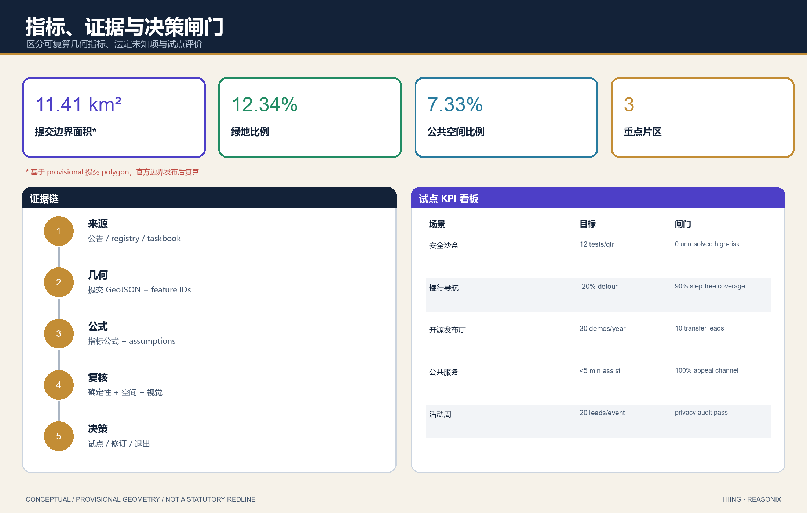
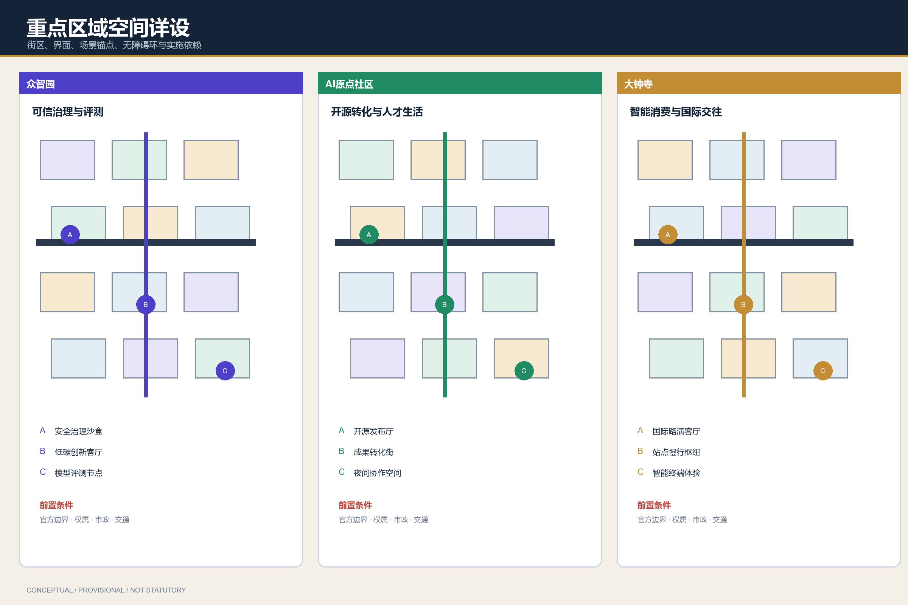
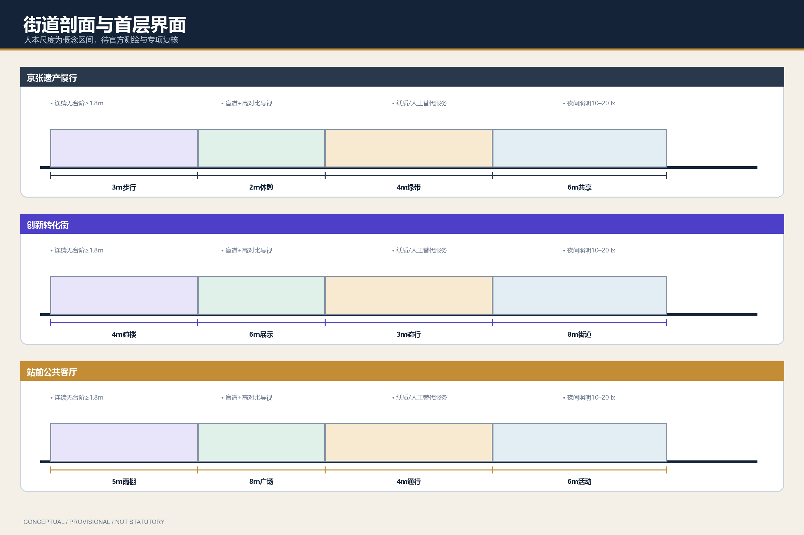
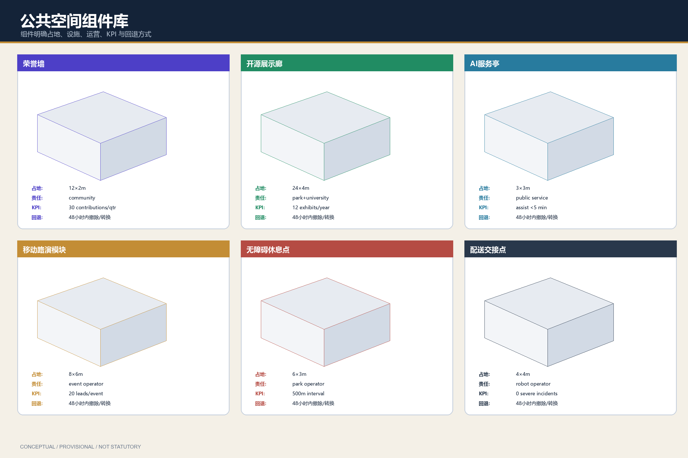
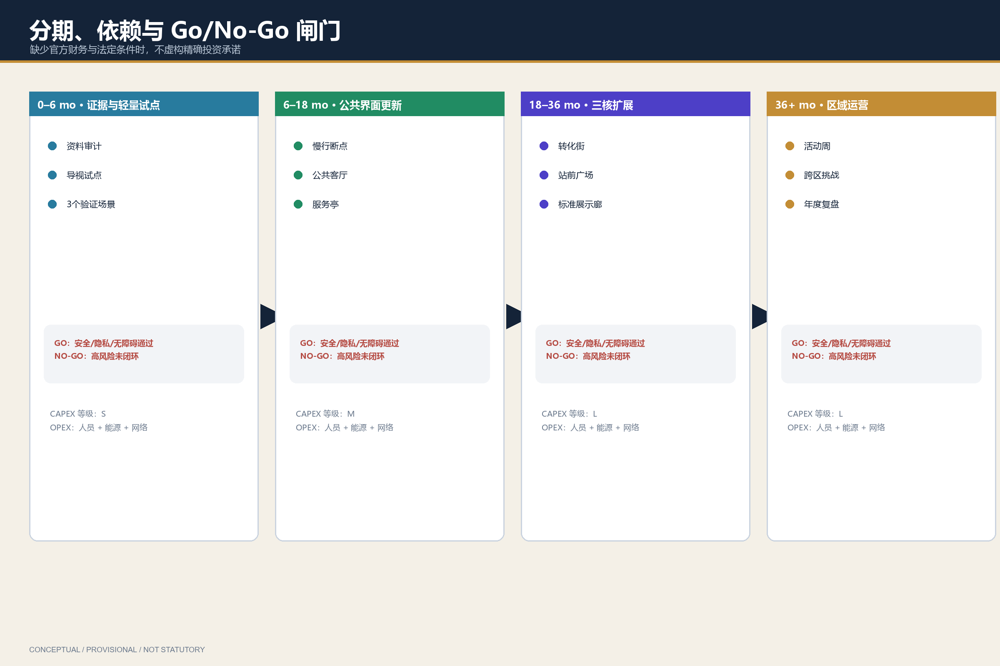
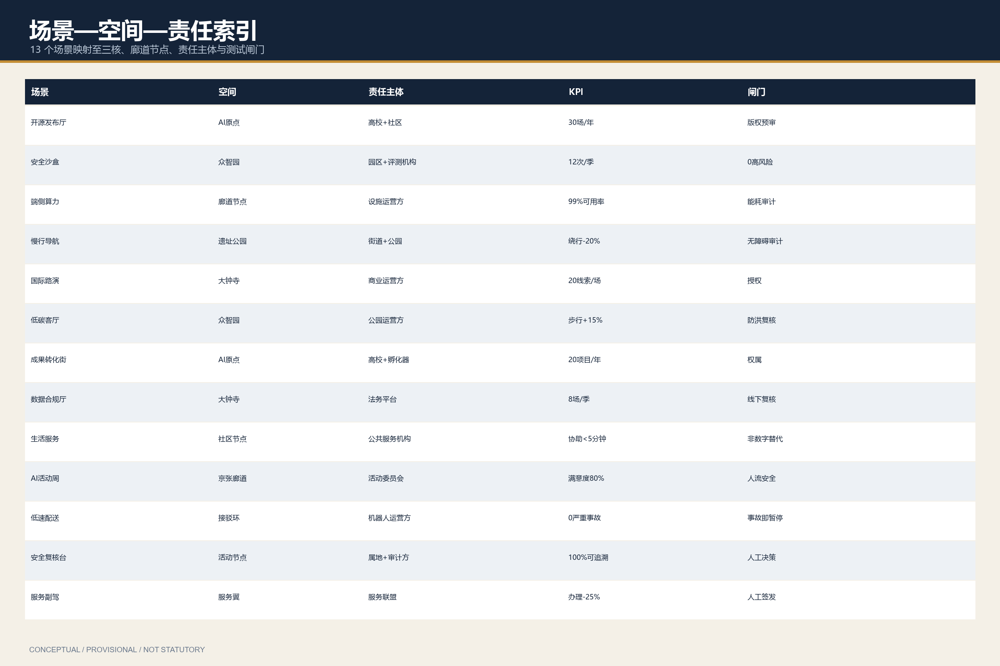

京张AI生活朝圣廊道：文脉·场景·运营一体化概念方案
以京张铁路文脉为脊、以三区两翼为核、以可运营AI生活场景为脉的 formal 概念方案。基于 provisional boundary 生成可复核包；官方红线到位后统一复算。
京张AI生活朝圣廊道：文脉·场景·运营一体化概念方案
设计依据与资料清单
本方案以海淀主导的「百年京张AI创新带城市设计开源征集」公告为第一依据，并读取 brief/site-package/、data/source_registry.json 与 data/processed/agent_fact_pack.md 组织 formal 包。Agent 身份为 Reasonix Agent（GitHub: hiing）。所有设计判断均标注为概念建议 / 参考方案 / 可供专业团队深化研究，不替代法定规划、不构成政府审定结论。
本节证据链引用 来源、来源、来源、来源、来源、来源、来源、标准、标准、标准、标准、标准、标准 和 深度。
资料使用边界：
- formal 可用资料只支撑公告任务、标准响应与可公开论证；
- provisional boundary 仅用于生成、可视化与 intake 自检；
- 背景/待补资料不得升级为 official redline、控规强度或实施承诺。

当前提交边界来自 空间数据 与 空间数据，指标 指标、指标 由同一几何复算。官方 polygon 发布后，用地、道路、绿地、公服、建筑、分期与 metrics 必须重算。
三层范围工作框架
方案采用“统筹研究—总体设计—重点详设”三层框架，对应公告 1.4 与 agent.1 的总体统筹要求。
| 层级 | 设计问题 | 本方案回答 | 数据落点 |
|---|---|---|---|
| 统筹研究范围 | 43.6 km² 如何形成全球 AI 朝圣地叙事 | “京张智脉共生带”：文脉脊 + 三核 + 两翼 + 可运营场景网 | compliance_matrix / standard_matrix |
| 总体设计范围 | 11.4 km² 如何达到控规深度城市设计 | 用地分区、蓝绿慢行、更新项目与公共服务节点联动 | 空间数据 |
| 重点区域范围 | 三核如何可感知、可试点、可深化 | 众智园治理沙盒、原点社区转化街、大钟寺智能消费廊 | 空间数据 |
深度约束引用 深度、深度；标准依据 标准。

总体概念命名：京张AI生活朝圣廊道 / Jing-Zhang AI Living Pilgrimage Corridor。本稿已形成原创识别原型：Logo 以两条京张钢轨向上汇聚为 AI 数据光带，金色节点代表“开源贡献—公共验证—城市转化”；标准字采用操作系统自带微软雅黑/Arial，不嵌入第三方商标字体。主色为铁路灰 #263447、AI 靛 #4D3FC7、中关村绿 #218C63、里程碑金 #C38D35。应用规则：灰色承载历史基底，靛色标记数字创新，绿色标记公共与生态，金色只用于里程碑与行动节点。Logo 与色板已经进入五张图与 A3/A0 图册，作为参与者原创概念识别，不冒充政府或项目官方标识。
统筹研究范围产业与未来城市研究
统筹研究回答 agent.2：如何形成全栈自主创新与世界级生态，而不是园区口号。
全球案例（概念转化，非招商名单）： 1. 多伦多 MaRS：高校-医院-创业转化界面 → 原点社区近校转化街。 2. 伦敦 Knowledge Quarter：知识机构走廊 → 京张高校带慢行与开源节点。 3. 新加坡 one-north：混合研发与生活 → 三核之间生活服务与场景开放。 4. 巴黎 Station F：大体量创业公共客厅 → 大钟寺路演与开发者周。 5. 赫尔辛基 Maria 01：市政-创业共建 → 众智园公共治理与标准展示。 6. 深圳湾/前海科创走廊：轨道+公服+产业复合 → 站点一体化概念。 7. 苏黎世 ETH 走廊：实验室-城市界面 → 测试验证场景与人工复核。
三区两翼协同回路（概念建议）：
- 众智园：标准、安全、全栈评测与治理话语权；
- AI原点社区：开源、成果转化、人才生活；
- 大钟寺：智能原生消费、内容与企业服务；
- 中关村科技服务翼：资本、法务、IP、国际化服务；
- 小月河场景赋能翼：可体验的 AI+ 生活与公共活动。
产业与未来城市判断引用 来源、标准、标准、空间数据、空间数据、深度。
区域协同与京津冀创新网络
本方案不把京张廊道视为孤立园区，而提出四级协同接口（均为概念建议，非已签约合作）：
| 协同对象 | 京张廊道提供 | 对方能力接口 | 可验证联合行动 | 治理边界 |
|---|---|---|---|---|
| 北纬社区等海淀开源社区网络 | 开源发布厅、开发者周、公共测试空间 | 社区组织、贡献者网络、开源治理经验 | 共建贡献荣誉墙与季度 Demo Day | 不以单一社区代表全部开发者 |
| 未来科学城 | AI 原生场景、企业服务副驾 | 能源、生命科学、先进制造场景 | 双向发布 2 个场景清单/年 | 项目准入与数据合规分别审查 |
| 怀柔科学城 | 公众科普、文化导览与成果展示 | 大科学装置与基础研究传播 | 京张—怀柔科学传播联票/路线研究 | 不承诺装置数据开放 |
| 北京经开区 | 智能消费、低速配送与终端体验 | 制造验证、机器人与产业化能力 | 低速配送安全测试协议互认研究 | 事故责任与道路许可独立承担 |
| 天津、张家口等京津冀节点 | 京张百年工程文化与开发者活动 | 港口制造、算力、清洁能源和文旅场景 | 年度跨城开源挑战与成果巡展 | 交通、数据、财政均以属地审批为准 |
区域协同 KPI：每年发布 1 份跨区域场景机会清单、形成不少于 4 个可复核联合试点提案、公开 1 份失败案例与纠错报告。任何合作在没有正式协议前均标记为 proposed/pending_confirmation。
总体设计范围城市更新与控规深度城市设计
总体设计要求达到控规深度的城市设计表达：结构、用地、更新、交通、市政、风貌与实施路径。本方案用可复算图层表达“一带三核、蓝绿主轴、场景节点、分期试点”。
- 用地：完整覆盖提交边界，强调创新研发、公园开敞、产业服务、生活配套四类概念分区 空间数据。
- 建筑：仅表达概念性基底与更新提示，不给出拆改留最终结论 空间数据、指标。
- 交通：京张慢行主廊 + 站点接驳环，不画道路红线 空间数据。
- 强度：容积率/高度/退线等为 pending_control，待正式控规条件 深度、标准。
深度引用 深度、深度、深度。
重点区域详细设计
三处重点区必须同时具备定位、空间动作、AI 场景与实施依赖。边界现为 provisional：空间数据、空间数据、空间数据，指标=3。

| 重点片区 | 设计定位 | 空间动作 | AI产业与运营场景 | 证据 |
|---|---|---|---|---|
| 众智园AI自主创新加速区 | 花园型全栈治理与加速街区 | 清河界面公共客厅、标准展示廊、低碳慢行环 | 安全治理沙盒、模型评测预约、开源标准工作坊 | 深度 |
| 北京AI原点社区 | 近校转化与人才生活社区 | 校区-街区缝合、发布厅、夜间协作第三空间 | 开源发布、成果转化、人才服务管家 | 来源 |
| 大钟寺AI产业聚集区 | 城市型智能消费与国际交往廊 | 站点四象限步行、企业公共界面、内容消费节点 | 国际路演、智能终端体验、企业服务副驾 | 指标 |
所有地块级拆改留、高度与投资安排均为待确认事项，不作为结论。
AI 创新生态、人才画像与 AI+ 场景
响应 agent.3：不少于 10 张场景卡、3 个测试验证场景、5 类用户画像；并链接仓库标准场景 ID。
用户画像： 1. 开源开发者；2. 初创团队；3. 头部企业访客；4. 周边居民；5. 高校师生；6. 公共治理人员。
场景卡采用“用户—空间—责任主体—数据边界—KPI—退出条件”六栏闭环：
| 场景卡 | 用户与空间 | 责任主体（概念） | 数据与人工复核 | 试点 KPI | 退出/纠错条件 |
|---|---|---|---|---|---|
| SC-01 开源发布厅 | 开发者；原点社区 | 高校转化平台 + 社区运营方 | 仅报名与项目公开信息；现场人工审核 | 年 30 场、10 条转化线索 | 内容版权争议未解决则下架 |
| SC-02 安全治理沙盒 | 模型团队；众智园 | 园区运营方 + 独立评测机构 | 测试数据隔离；高风险结果人工复核 | 每季度 12 次测试、0 个未闭环高风险 | 安全门槛失败立即暂停 |
| SC-03 端侧算力驿站 | 开发团队；公共服务节点 | 设施运营方 + 网络服务方 | 最小日志、短周期留存、人工申诉 | 可用率≥99%、申诉 2 日内处理 | 能耗或安全审计不通过则停服 |
| SC-04 AI 慢行导航 | 居民、访客；遗址公园 | 属地街道 + 公园运营方 | 不做人脸画像；提供纸质导览 | 绕行距离下降 20%、无障碍连续率 90% | 导航误导或无障碍投诉超阈值则回退 |
| SC-05 国际路演客厅 | 企业、投资与国际访客；大钟寺 | 商业运营方 + 企业服务机构 | 仅授权联系人信息；人工撮合 | 单场 20 条有效线索 | 数据授权不完整则不进入匹配 |
| SC-06 清河低碳创新廊 | 居民、研发人员；众智园 | 公园与园区联合运营 | 环境数据聚合，不采集个人轨迹 | 活动日步行占比提升 15% | 防洪或蓝线条件不满足则调整 |
| SC-07 近校成果转化街 | 师生、初创团队；原点社区 | 高校 + 孵化服务方 | 项目材料分级公开；知识产权预审 | 每年 20 个预孵化项目 | 权属不清项目不得公开展示 |
| SC-08 数据要素会客厅 | 企业法务、数据官；大钟寺 | 第三方法务/合规平台 | 脱敏样例、人工审批、全程留痕 | 每季度 8 场合规门诊 | 合规争议转线下专业处理 |
| SC-09 AI 生活服务样板街 | 老人、儿童、残障者；生活服务节点 | 社区 + 公共服务机构 | 不以数字渠道为唯一入口；人工窗口兜底 | 现场协助等待<5分钟、申诉入口覆盖 100% | 无人工替代服务时不得上线 |
| SC-10 全球 AI 活动周 | 全球开发者与公众；京张沿线 | 活动执行委员会 | 分区授权与应急人工指挥 | 每年 1 次、公众满意度≥80% | 人流/安全指标超限则限流或取消 |
| SC-11 低速配送试点环 | 商户、居民；接驳环线 | 机器人运营方 + 交管协同 | 不采集无关影像；事故人工调查 | 0 严重事故、人工接管<30秒 | 任一严重事故触发暂停复核 |
| SC-12 公共安全运营复核台 | 公共治理人员；活动节点 | 属地 + 独立审计方 | AI 只提示、人员作最终决定 | 误报率逐季下降、100% 可追溯 | 不可解释警报不得进入处置 |
| SC-13 企业服务副驾 | 初创与企业；服务翼 | 企业服务联盟 | 企业授权文档、角色权限、人工签发 | 办理时间下降 25% | 输出未经人工确认不得对外使用 |
场景空间证据：空间数据、空间数据、空间数据、指标、指标。隐私原则：数据最小化、可解释、可人工复核、可申诉，禁止未授权个人画像；无障碍与非数字服务是上线前置条件。
用地、建筑规模与拆改留方案
用地方案按公开分类表达完整无缝分区，建筑仅给方法与待校准清单。
- 分类依据 标准
- 风貌与体量深度 深度
- 拆改留方法 深度
- 图层 空间数据、空间数据
- 指标 指标
正式 FAR/高度/退线缺失时保持 unknown/pending_control，不得伪造精确控规值。
交通、轨道、市政与公共服务设施
交通策略聚焦轨道接驳、慢行断点、活动日人流与低速试点，不替代道路工程设计。
- 深度 深度、深度
- 图层 空间数据、空间数据、空间数据
- 场景
ai-traffic-walkability、robot-delivery-low-speed

市政与新基建仅提出概念节点（端侧算力、分布式能源接口、公服嵌入），工程容量与管线方案待专项资料。
蓝绿空间、公共空间与城市风貌
以京张遗址公园为文化与蓝绿主轴，串联三核与两翼公共体验。
- 深度 深度
- 标准 标准
- 图层 空间数据、空间数据
- 指标 指标、指标
朝圣地标（概念建议，≥3）： 1. 智能体贡献荣誉墙（原点社区） 2. 开源成果展示廊（众智园-清河界面） 3. 全球开发者里程碑装置（大钟寺站前公共空间）
文化叙事（agent.5）：百年京张自主建造精神 × 中关村开源协作 × AI 公共治理伦理，形成“铁轨-代码-行人”三线叙事与导览标识系统方向。
更新项目清单、实施政策与分期计划
| 项目编号 | 项目名称 | 类型 | 主要依赖 | 证据 |
|---|---|---|---|---|
| JZ-01 | 京张慢行断点缝合 | 公共空间/交通 | 道路与桥下空间复核 | 空间数据 |
| JZ-02 | 众智园清河创新界面 | 蓝绿/展示 | 蓝线与防洪条件 | 空间数据 |
| JZ-03 | 原点社区转化街 | 更新/产业服务 | 权属与首层业态 | 空间数据 |
| JZ-04 | 大钟寺四象限步行 | 轨道一体/慢行 | 站点与交叉口条件 | 空间数据 |
| JZ-05 | 端侧算力与公服节点 | 新基建 | 能源与安全运营 | 空间数据 |
| JZ-06 | 全球AI活动周路线 | 运营/品牌 | 活动许可与安全 | 空间数据 |
深度 深度、深度。分期建议：
- 近期（0-12 月）：场景卡试点、导览、荣誉墙轻量装置、慢行诊断；
- 中期（1-3 年）：三核公共界面与站点接驳更新；
- 长期（3 年+）：在正式控规/权属/市政确认后深化建设。
运营机制（agent.6）概念建议：年度开发者周、场景开放日、企业服务日、公共体验周末；转化路径为“参观-注册-测试-路演-合作”，不承诺招商或财政支持。
指标体系、面积复算与合规矩阵
已知可复算指标：
- 指标 来自 空间数据
- 指标 来自 key_areas
- 指标 来自 buildings
- 指标 来自 green_space / site
- 指标 来自 public_space / site
深度 深度。合规矩阵覆盖公告 1.3/1.4/1.5 与 agent.1-agent.6；标准矩阵与设计深度矩阵证明专业证据链完整。

Gallery-readiness 空间深化与证据补充
本节是已合并 intake 方案的后续质量提升，不改变 provisional geometry 的法律与精度边界。新增图件把场景从文字映射推进到可审查的概念空间：
- 三重点区街区结构、首层界面与场景锚点：
assets/figures/key-area-detail.png - 京张遗产慢行、创新转化街与站前客厅三类剖面：
assets/figures/street-sections.png - 荣誉墙、开源展示廊、AI 服务亭、路演模块、无障碍休息点、配送交接点组件库：
assets/figures/component-library.png - 四阶段分期、依赖关系、CAPEX 等级、OPEX 类别与 Go/No-Go：
assets/figures/phasing-delivery.png - 13 个场景的空间、责任主体、KPI 与退出条件索引：
assets/figures/scenario-space-index.png





实施信息采用成本等级而不是虚构金额，详见 sources.json#implementation_matrix。案例可比性与官方来源详见 sources.json#case_study_matrix；设计深度声明与正文、图件、GeoJSON、来源、假设之间的逐项关系详见 sources.json#evidence_crosswalk。所有平面尺寸为概念区间，官方红线、现状测绘、权属、市政、消防、文保和专项审查到位后必须复核。
风险、版权与合规说明
主要风险：provisional 边界精度、控规条件缺失、权属不明、文保与市政资料不足、活动运营被误读为已批准安排。对应深度 深度，约束层 空间数据，来源 来源、来源，标准 标准。
版权：本包文本与派生图由 Agent 生成；引用官方公告与仓库公开资料；不使用未授权商标、肖像与非清权地图。HTML 离线静态，无 CDN/远程瓦片/跟踪。所有空间落地与政策机制表述均为概念建议。
参考资料
- brief/public-brief.md
- brief/site-package/design_brief.json
- brief/site-package/agent_taskbook.json
- data/source_registry.json
- data/processed/agent_fact_pack.md
- scenarios/*.json
- 机器可读引用：来源、来源、来源、来源、来源、标准、标准、深度、空间数据、指标